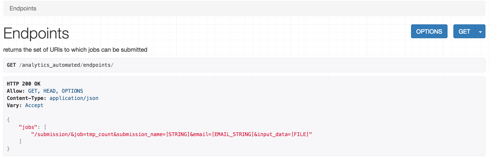

Using A Basic Job¶
Once a job is configured users will want to use it to get data. The first thing a user should do is check the endpoints.
Endpoints¶
If a user checks the endpoints URI, http://127.0.0.1:8000/analytics_automated/endpoints/, a list of all live and runnable jobs will be returned with their REQUIRED parameters
Users can use this information to send jobs and poll the status of their jobs. Given that http://127.0.0.1:8000/analytics_automated/ is the root URL for the service users then take the submission/ lines and add this to the root URL to POST requests
POST¶
Users can send data to jobs using a multipart form POST request given the URIs listed by the endpoints service. All jobs require an email address and submission_name. The submission_name is just a short identifier the user provides to uniquely name their data submission.
Users must also provide input data as a file for every job. This file can be empty for jobs which do not require input data.
In the example/ dir you can find two scripts which demonstrate submissions, send_fasta.py and send_file.py
Submissions will receive json data response indicating success or failure. In a success state the message will contain a UUID which users can use to check the state of their submission and retrieve data
Note: When users POST to jobs any parameter string values are checked to prevent code injection. Values which contain punctuation, Python reserved words, R base::package functions or valid unix commands are rejected.
GET¶
If a submission was successful users can poll the server to check the status of their requested job. Using the UUID returned on successful submission they can send a GET request to
http://127.0.0.1:8000/analytics_automated/submission/UUID
Responses to this will indicate if the job is running or has ended in success or failure. Files and data the job produces will also be made available in these messages as additional URIs which can be looped over to retrieve the data.